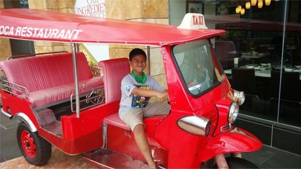
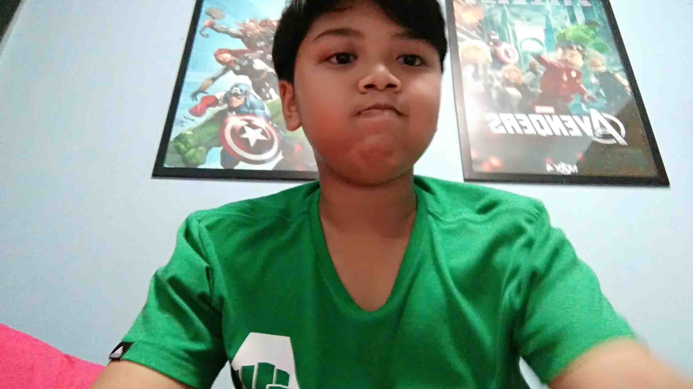
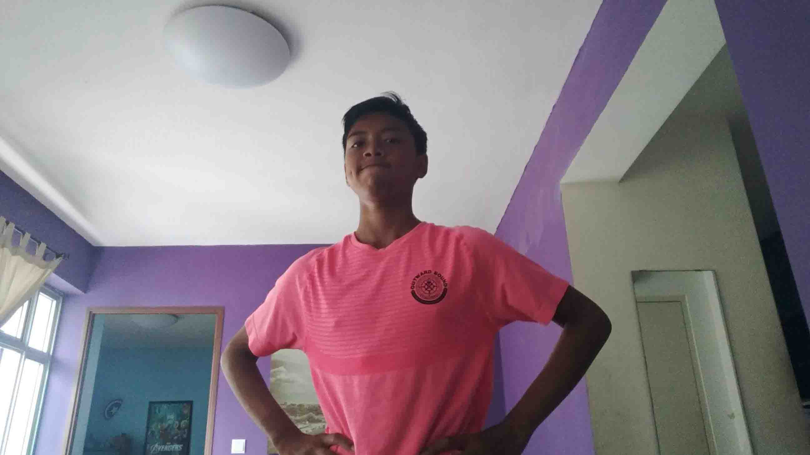
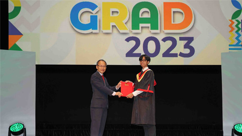
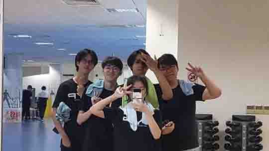

| Subject | Grade |
|---|---|
| English | C |
| Math | C |
| Science | C |
| Malay | D |
| Leadership Roles |
|---|
| None |


I studied at Seng Kang Primary School for 6 years doing averagely for most of my subjects except for Malay. In the end i got a PSLE score of 149. In school, i took up Modern Dance as a CCA. We got alot of Distinctions and won a Super24 Competition. I did not really enjoy studying during this period. I was forced to continue Malay and even got extra lessons one on one and still got a D. I was more focussed on Dance and the Friendships i made.
| Subject | Grade |
|---|---|
| English (NT) | A |
| Math (NT) | A |
| Science (NT) | A |
| Computer Applications | A |
| Elements Of Business Skills | A |
| Malay (NT) | D |
| English (NA) | Two |
| Math (NA) | Two |
| Leadership Roles |
|---|
| Class Treasurer |
| Physical Training Head |

4 Years of Pei Hwa. I took NCC as a CCA, very different than Dance but i did not regret it one bit. This time I enjoyed studying abit more but still hated doing malay.
| Module | Units | Grade |
|---|---|---|
| IT Essentials and UI/UX | 7 | A |
| Web Development Fundamentals | 7 | A |
| Personal and Prof Development I | 2 | A |
| Content Management System | 7 | A |
| Programming Essentials | 7 | A |
| Personal and Prof Development II | 2 | A |
| Website Development | 6 | A |
| Industry Attachment | 4 | A |
| Social Media for Marketing | 2 | A |
| Rich Interactive Applications | 6 | A |
| Mobile Web Development | 6 | A |
| Personal and Prof Development III | 2 | A |
| GPA | 4.0 | |
| Leadership Roles |
|---|
| Class Representative |
| Admin Head |

I got into this course by EAE. I was very passionate about doing anything programming and found that this was the only course that does it. I was very shocked that i did more design than programming. I used alot of Adobe applications in my 2 years. I am very grateful that i got a perfect 4.0 but after getting it 4 semesters in a row and also Directors List, it felt very empty.
In ITE, this CCA was most of my life as i did alot of events. I was Admin Head for this CCA, i managed my admin team across various events. Even though its only for a year, I made alot of new friends from various schools.
Thanks to my high GPA, I was elligible for a program that represents the school. All i had to do was more events but more volunteer work than usual. By the end of my ITE years, I graduated from ACE.
| Module | Units | Grade |
|---|---|---|
| Computer Graphics Modelling | 4 | Distinction |
| Programming | 4 | A |
| Object Oriented Programming | 4 | A |
| Story Through Audio & Visual | 4 | Distinction |
| Concept Ideation | 2 | B |
| Principles Of Game Design | 2 | A |
| Interactive Storytelling Project | 2 | Distinction |
| Computer Graphics Programming | 4 | B+ |
| Data Structures & Algorithms | 4 | B |
| Database and Server Netwroking | 4 | A |
| Computing Systems | 2 | C+ |
| Forces and Motion Programming | 2 | A |
| Game Project Management | 2 | B |
| Gamification Techniques | 2 | A |
| Computer Graphics Simulation Project | 2 | A |
| GPA | 3.71 | |
| Leadership Roles |
|---|
| Class Representative |
| Assistant Human Resource Secretery |

I also got into this course via EAE. It was the only course with alot of programming and i was interested in making my own games. If another life i could not get into this course, i would have just went Higher Nitec in Game Development. So far, Ive been enjoying this course. I got to use skills like video editing which i did not expect to use it here but unlike my previous course most of it was programming and i was quite happy to see that.
At the start of Year 1, I joined 4 CCAs. The CCAs were Peer Supporters Club, Kendo Club, Kickboxing and SDM Club. In the end i remained with 2 as the sports CCA were taking a toll on my physical body. I also couldnt keep up with my peers physical strenght and almost got knocked out once. I also applide for EXCO and got a small role as a Assistant Human Resource Secretery
I am in this program because i am under NYP's Scholarship (ITE Pathway). For this event, similar to the ACE program, I also kind of represent the school but this time i plan an event with other students who are also in the program. Now currently i am doing SYLP for this program.